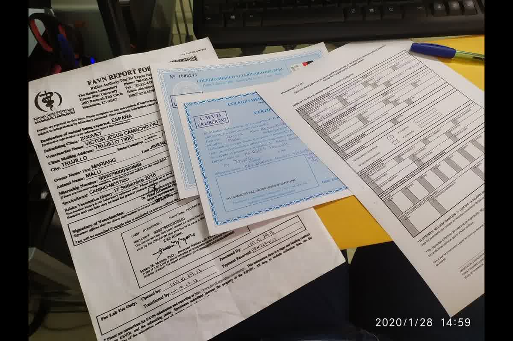
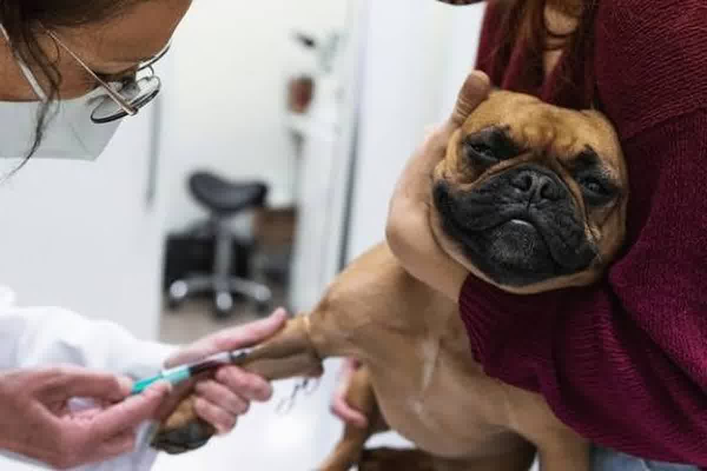

Análisis técnico de la Dra. Jessica Camacho sobre el RNATT, el título serológico antirrábico. Requisitos para la Unión Europea, plazos de 30 días y validez del umbral 0.5 UI/mL.

El certificado de vacunación no demuestra que un animal sea inmune a la rabia, solo que recibió una dosis de antígeno. Para ingresar a territorios libres de la enfermedad o con programas de erradicación estricta, la autoridad exige el rnatt: qué es el título serológico antirrábico y cuándo lo necesita tu perro para verificar que el sistema inmunitario produjo al menos 0.5 UI/mL de anticuerpos neutralizantes. En Trujillo, recibimos familias que ignoran que un muestreo realizado antes del día 30 post-vacunación invalida todo el proceso de exportación hacia la Unión Europea.
La validez legal de una vacuna antirrábica comienza a los 21 días de su aplicación según el Reglamento (UE) 576/2013, pero la cinética de anticuerpos neutralizantes requiere un margen mayor para alcanzar el umbral de seguridad. El Rabies Antibody Titration Test (RNATT) mide la capacidad del suero del animal para neutralizar el virus en condiciones de laboratorio controladas. Un perro puede estar correctamente vacunado y, sin embargo, presentar un fallo vacunal primario que lo sitúe por debajo de los niveles exigidos por la normativa internacional.
La respuesta humoral depende de factores individuales como la edad, el estado nutricional y la carga de estrés metabólico durante la consulta. Si el título resulta inferior a 0.5 UI/mL, el proceso debe reiniciarse con una nueva dosis de refuerzo y un nuevo periodo de espera para el muestreo. Los fundamentos inmunológicos de esta prueba y las metodologías RFFIT o FAVN están detallados en nuestra Descripción Técnica de la Respuesta Humoral Post-Vacunación Antirrábica y Fundamentos Metodológicos de las Pruebas de Neutralización Viral (RFFIT y FAVN) en Pequeños Animales.

El muestreo de sangre para el RNATT debe realizarse como mínimo 30 días después de la vacunación y siempre que el microchip ISO 11784/11785 haya sido implantado antes de la dosis de antígeno. Realizar la toma de muestra el día 28 o 29 es el error que más vemos en consulta en Trujillo y garantiza el rechazo del expediente en el punto de inspección fronterizo. El laboratorio que procesa la muestra debe estar aprobado por la Comisión Europea o la autoridad competente del país de destino; los resultados de laboratorios locales sin acreditación internacional carecen de validez para el endoso de SENASA.
La logística de envío de suero desde Perú hacia laboratorios en Estados Unidos o Europa exige una cadena de frío estricta para evitar la hemólisis de la muestra. Una muestra degradada genera resultados erráticos o directamente no procesables, lo que obliga al propietario a costear un segundo envío y a retrasar sus planes de mudanza. La fecha del muestreo en el informe de laboratorio es inalterable y determina el inicio de los tres meses de espera obligatorios que exigen la mayoría de los países para permitir el ingreso sin cuarentena oficial.
La Unión Europea, Reino Unido, Japón, Australia y Nueva Zelanda requieren el RNATT para animales provenientes de países que no consideran libres de rabia, como es el caso de Perú. Una vez obtenido un resultado favorable superior a 0.5 UI/mL, el título tiene validez de por vida siempre que la vacunación antirrábica se mantenga vigente sin un solo día de interrupción en los refuerzos anuales. Si el propietario olvida revacunar antes de la fecha de caducidad de la dosis previa, el título serológico pierde su validez y el animal deberá pasar nuevamente por el muestreo y el periodo de espera.
Este requisito no es negociable ni está sujeto a la discreción del inspector de aduanas. El documento original del laboratorio debe acompañar al Certificado Zoosanitario de Exportación durante todo el tránsito internacional. En nuestra experiencia clínica, el extravío del informe original o la presentación de copias simples es motivo de retención del animal en el aeropuerto de destino. La trazabilidad entre el número de microchip registrado en el informe de serología y el número detectado por el escáner del oficial fronterizo debe ser absoluta y sin discrepancias de un solo dígito.
La implantación del microchip debe ser el primer paso cronológico antes de cualquier vacuna o prueba serológica. Si el perro ya tiene un microchip de 10 dígitos o uno que no cumple el estándar FDX-B, es necesario colocar un dispositivo nuevo y revacunar bajo la identidad de ese nuevo chip antes de proceder con el RNATT. El laboratorio internacional rechazará cualquier muestra donde el número de microchip no esté claramente identificado y vinculado al protocolo de vacunación vigente por un médico veterinario colegiado.
El estado de salud general del paciente influye directamente en la producción de anticuerpos neutralizantes tras la vacunación. Un perro con parasitosis activa o procesos inflamatorios crónicos desvía sus recursos inmunológicos, aumentando el riesgo de un resultado inferior al umbral de 0.5 UI/mL. En Zoovet Travel Trujillo realizamos un cribado clínico previo al muestreo para asegurar que el sistema inmunitario del animal está en condiciones óptimas para responder al estímulo vacunal. Esta precaución técnica evita el gasto innecesario de enviar muestras que están destinadas al fracaso analítico por falta de preparación biológica.
La planificación del viaje debe contemplar un margen de al menos cuatro meses desde la toma de la muestra hasta la fecha de salida. El tiempo de procesamiento en laboratorios internacionales suele oscilar entre 3 y 6 semanas, a lo que se suma el periodo de espera reglamentario de 90 días exigido por destinos como España o Francia. Intentar acelerar estos plazos mediante la presión al veterinario o la búsqueda de atajos documentales solo expone al animal a ser deportado o enviado a una estación de cuarentena con costos elevados a cargo del propietario.
Un error en el intervalo del muestreo o el envío de suero a laboratorios no acreditados resultará en la prohibición de ingreso de su perro a la Unión Europea. Zoovet Travel gestiona la toma de muestra técnica y la logística internacional hacia laboratorios autorizados desde Trujillo para garantizar un resultado de serología válido. para auditar su cronograma sanitario antes de que el tiempo se convierta en su peor enemigo. Asegure su mudanza con respaldo científico y experiencia en regulación internacional.
Calle Cuba 241, Urb. El Recreo — Trujillo, Perú